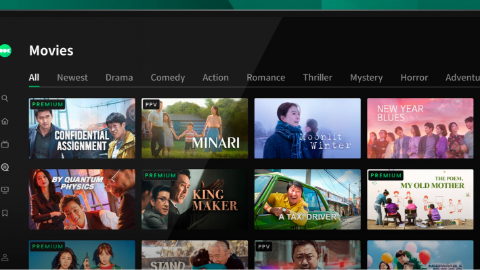
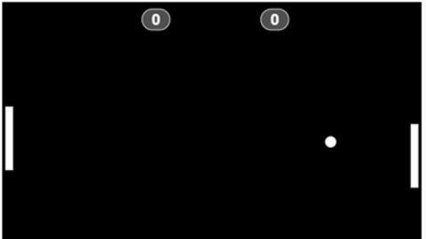

<!DOCTYPE html>
<html lang="pt-br">

</html>

<head>
  <meta charset="UTF-8" />
  <meta name="viewport" content="width=device-width, initial-scale=1.0" />
  <link href="https://cdn.jsdelivr.net/npm/bootstrap@5.3.3/dist/css/bootstrap.min.css" rel="stylesheet"
    integrity="sha384-QWTKZyjpPEjISv5WaRU9OFeRpok6YctnYmDr5pNlyT2bRjXh0JMhjY6hW+ALEwIH" crossorigin="anonymous" />
  <link rel="stylesheet" href="https://cdn.jsdelivr.net/npm/bootstrap-icons@1.11.3/font/bootstrap-icons.min.css">
  <link rel="stylesheet" href="style.css" />
  <title>Meu portfólio</title>
</head>

<body>

  <header class="container text-center">
    
    <p class="lead"> Eu sou Giovana</p>
    <h1>Eu estou estudando Programação pelo Alura</h1>
    <p>Tenho 17 anos e estou cursando a 3°série do Ensino Médio</p>
    <p>Minhas habilidades</p>
    <div>
      <p class="badge bg-secondary">HTML</p>
      <p class="badge bg-secondary">CSS</p>
      <p class="badge bg-secondary">JavaScript</p>
      <p class="badge bg-secondary">Scratch</p>
    </div>
  </header>
  <main class="container mt-5">
    <h2>Meus Projetos</h2>
    <div class="row">
      <!-- Projeto 1 -->
      <div class="col-md-4">
        <div class="card">
          
          <div class="card-body">
            <h5 class="card-title">Jogo de Corrida</h5>
            <p class="card-text"> Projeto criado no site P5JS com o intuito
              de usar a função de aleatoriedade na movimentação
              dos bonecos. Dessa forma, é imprevisível quem ganhará
              a corrida. </p>
            <button type="button" class="btn btn-link" data-bs-toggle="modal" data-bs-target="#modal1">Veja o
              projeto</button>
          </div>
        </div>
      </div>
      <!-- Projeto 2 -->
      <div class="col-md-4">
        <div class="card">
          
          <div class="card-body">
            <h5 class="card-title">Doramaflix</h5>
            <p class="card-text"> Projeto criado no site P5JS com o objetivo de criar uma plataforma de divulgação de
              video, usando as três linguagens de programação</p>
            <button type="button" class="btn btn-link" data-bs-toggle="modal" data-bs-target="#modal2">Veja o
              projeto</button>
          </div>
        </div>
      </div>
      <!-- Projeto 3 -->
      <div class="col-md-4">
        <div class="card">
          
          <div class="card-body">
            <h5 class="card-title">Pong Pong</h5>
            <p class="card-text"> Projeto criado no site P5JS, com a
              modalidade single player e multiplayer
              local. Foi adicionado música e pontuação.</p>
            <button type="button" class="btn btn-link" data-bs-toggle="modal" data-bs-target="#modal3">Veja o
              projeto</button>
          </div>
        </div>
      </div>
    </div>
  </main>
  <!--Modal 1-->
  <div class="modal" id="modal1" tabindex="-1">
    <div class="modal-dialog">
      <div class="modal-content">
        <div class="modal-header">
          <h5 class="modal-title">Jogo de Corrida</h5>
          <button type="button" class="btn-close" data-bs-dismiss="modal" aria-label="Close"></button>
        </div>
        <div class="modal-body">
          <p>Modal body text goes here.</p>
          <p>O projeto é uma página web criada com HTML e CSS, destinada a exibir uma coleção pessoal de
            livros favoritos. O objetivo é criar um ambiente virtual onde seja possível compartilhar
            seus livros preferidos, fornecendo uma descrição breve de cada um, incluindo o autor, o ano
            de publicação e uma opção de compra.</p>
          <p>A estrutura do site é baseada em HTML, que define a semântica e o layout do conteúdo,
            enquanto o CSS é usado para estilizar a página visualmente, incluindo cores, tipografia e a
            disposição dos elementos.</p>
          <p>O HTML organiza o conteúdo em um cabeçalho com o título do site, seguido por uma divisão
            principal (.container) que apresenta o propósito do site e a coleção de livros em uma seção
            flexível (.livros). Cada livro é destacado em seu próprio contêiner (.livro), mostrando uma
            imagem da capa, detalhes do livro e um link de compra. O design responsivo é garantido pelo
            uso de uma meta tag viewport e um layout flexível que se adapta a diferentes tamanhos de
            tela.</p>
          <p>O CSS personaliza o visual do site, usando variáveis para cores, estilizando o texto com uma
            fonte importada do Google Fonts e aplicando um esquema de cores suaves e botões interativos.
            O uso de HTML e CSS é importante pois assim é possível criar um site acessível e
            esteticamente agradável sem a necessidade de scripts complexos, com foco na usabilidade e na
            experiência da pessoa usuária. A escolha da tipografia e do esquema de cores contribui para
            a atmosfera acolhedora do site, incentivando a exploração da coleção de livros.</p>
          
        </div>
      
      <div class="modal-footer">
        <a href="https://editor.p5js.org/00001112109043sp/sketches/i2la96aq0">Ver projeto ao vivo</a>
        <a href="https://editor.p5js.org/00001112109043sp/sketches/i2la96aq0">Ver código do projeto</a>
        <button type="button" class="btn btn-secondary" data-bs-dismiss="modal">Close</button>
      </div>
      </div>
    </div>
  </div>
  <!--Modal 2-->
  <div class="modal" id="modal2" tabindex="-1">
    <div class="modal-dialog">
      <div class="modal-content">
        <div class="modal-header">
          <h5 class="modal-title">Doramaflix</h5>
          <button type="button" class="btn-close" data-bs-dismiss="modal" aria-label="Close"></button>
        </div>
        <div class="modal-body">
          <p>Modal body text goes here.</p>
          <p>O projeto <strong>DoramaFlix</strong> é uma plataforma digital criada no ambiente do site P5.js, com o
            objetivo de divulgar vídeos relacionados a doramas. A proposta é oferecer uma experiência interativa onde
            seja possível explorar e assistir a vídeos de forma dinâmica e envolvente, utilizando as três linguagens
            principais da web: HTML, CSS e JavaScript.</p>
          <p>A estrutura da aplicação é construída em HTML, que organiza o conteúdo da página, incluindo o cabeçalho, as
            seções de destaque e os players de vídeo. O CSS é responsável pela estilização visual da interface,
            definindo cores, fontes, espaçamentos e adaptando o layout para diferentes tamanhos de tela. Já o
            JavaScript, especialmente por meio da biblioteca P5.js, é utilizado para adicionar interatividade e
            dinamismo, controlando animações, eventos e a lógica de exibição dos vídeos.</p>
          <p>O site apresenta uma interface moderna e responsiva, composta por um cabeçalho com o título da plataforma,
            seguido por uma área principal onde os vídeos são exibidos em destaque. Cada dorama é apresentado em um card
            individual, contendo a miniatura do vídeo, título, descrição e opções de interação. O layout flexível e o
            uso da meta tag viewport garantem uma boa experiência em dispositivos móveis e desktops.</p>
          <p>O CSS utiliza variáveis para manter consistência nas cores, aplica uma tipografia moderna importada do
            Google Fonts e insere botões interativos que reforçam a identidade visual da plataforma. Com o uso combinado
            de HTML, CSS e JavaScript, o projeto DoramaFlix consegue unir estética, funcionalidade e usabilidade em um
            só ambiente, incentivando a descoberta e o compartilhamento de vídeos de doramas de forma prática e
            atrativa.</p>
          
        </div>
      
      <div class="modal-footer">
        <a href="https://isabelaanjos.github.io/DORAMAFLIX/">Ver projeto ao vivo</a>
        <a href="https://isabelaanjos.github.io/DORAMAFLIX/">Ver código do projeto</a>
        <button type="button" class="btn btn-secondary" data-bs-dismiss="modal">Close</button>
      </div>
      </div>
    </div>
  </div>
  <!--Modal 3-->
  <div class="modal" id="modal3" tabindex="-1">
    <div class="modal-dialog">
      <div class="modal-content">
        <div class="modal-header">
          <h5 class="modal-title">Pong Pong</h5>
          <button type="button" class="btn-close" data-bs-dismiss="modal" aria-label="Close"></button>
        </div>
        <div class="modal-body">
          <p>Modal body text goes here.</p>
          <p>O projeto é um jogo interativo criado com a biblioteca P5.js, inspirado no clássico Pong. Ele oferece duas
            modalidades de jogo: *single player*, onde o jogador enfrenta a inteligência artificial, e *multiplayer
            local*, permitindo que duas pessoas joguem na mesma tela. O objetivo é criar uma experiência divertida e
            dinâmica, com elementos adicionais, como música de fundo e contagem de pontos, para aumentar a imersão e o
            desafio.</p>
          <p>A estrutura do jogo é construída com a ajuda do P5.js, que facilita a criação do ambiente visual e as
            interações. O jogo apresenta uma interface simples, com uma raquete controlada pelo jogador e uma bola que
            se movimenta de forma fluida pela tela, proporcionando uma jogabilidade intuitiva. A pontuação é exibida de
            forma clara, e o sistema de música foi implementado para acompanhar as jogadas, criando uma atmosfera mais
            envolvente.</p>
          <p>O código organiza as funcionalidades do jogo de forma modular, com variáveis para a pontuação, controles de
            movimento das raquetes, e um sistema para detectar colisões com a bola. Além disso, a música de fundo é
            tocada durante toda a partida, e efeitos sonoros são acionados com base nas ações do jogo, como quando a
            bola bate nas raquetes ou nas paredes. O design visual do jogo é minimalista, com cores simples e um layout
            que foca no desempenho e na jogabilidade, sem distrações. A escolha das cores e do estilo sonoro contribui
            para uma experiência mais envolvente e divertida.</p>
          <p>O uso do P5.js facilita a criação do jogo de forma acessível e eficiente, permitindo que ele seja jogado
            diretamente no navegador sem a necessidade de configurações complexas. O design limpo e a jogabilidade
            descomplicada garantem que tanto iniciantes quanto jogadores experientes possam aproveitar o jogo com
            facilidade. Além disso, a adição de música e pontuação traz um toque especial, mantendo o jogador engajado
            durante as partidas.</p>
          
        </div>

        <div class="modal-footer">
          <a href="https://scratch.mit.edu/projects/1038704228">Ver projeto ao vivo</a>
          <a href="https://scratch.mit.edu/projects/1038704228">Ver código do projeto</a>
          <button type="button" class="btn btn-secondary" data-bs-dismiss="modal">Close</button>
        </div>
      </div>
    </div>
  </div>

  <footer class="container py-5">
    <h2>Entre em Contato</h2>
    <div>
      <i class="bi bi-github"></i>
      <a href="https://github.com/isabelaanjos">GitHub</a>
    </div>
    <p class="my-5 text-center">© Copyright 2024. Produzido por Giovana_</p>
  </footer>
  <script src=" https://cdn.jsdelivr.net/npm/bootstrap@5.3.2/dist/js/bootstrap.bundle.min.js">
  </script>
</body>

</html>